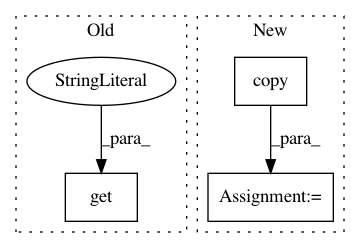

2b48b9433d7ec5b93ceb2d97004e74b3981f9990,pymc3/variational/approximations.py,FullRank,create_shared_params,#FullRank#,163
Before Change
return tril_index_matrix
def create_shared_params(self, **kwargs):
start = self.gbij.map(kwargs.get("start", self.model.test_point))
n = self.global_size
L_tril = (
np.eye(n)
After Change
if start is None:
start = self.model.test_point
else:
start_ = self.model.test_point.copy()
pm.sampling._update_start_vals(start_, start, self.model)
start = start_
start = self.gbij.map(start)
n = self.global_size
L_tril = (
np.eye(n)
In pattern: SUPERPATTERN
Frequency: 4
Non-data size: 3
Instances
Project Name: pymc-devs/pymc3
Commit Name: 2b48b9433d7ec5b93ceb2d97004e74b3981f9990
Time: 2017-05-04
Author: maxim.v.kochurov@gmail.com
File Name: pymc3/variational/approximations.py
Class Name: FullRank
Method Name: create_shared_params
Project Name: pantsbuild/pants
Commit Name: a1696c815774552ee14e8df30f5636bb97c2b9e9
Time: 2018-07-13
Author: john.sirois@gmail.com
File Name: src/python/pants/backend/python/tasks/wrapped_pex.py
Class Name: WrappedPEX
Method Name: run
Project Name: rusty1s/pytorch_geometric
Commit Name: 5c561949d67123cf6ea892812e2357ce9bd9a819
Time: 2020-08-24
Author: matthias.fey@tu-dortmund.de
File Name: torch_geometric/nn/models/gnn_explainer.py
Class Name: GNNExplainer
Method Name: visualize_subgraph
Project Name: pymc-devs/pymc3
Commit Name: 2b48b9433d7ec5b93ceb2d97004e74b3981f9990
Time: 2017-05-04
Author: maxim.v.kochurov@gmail.com
File Name: pymc3/variational/approximations.py
Class Name: MeanField
Method Name: create_shared_params